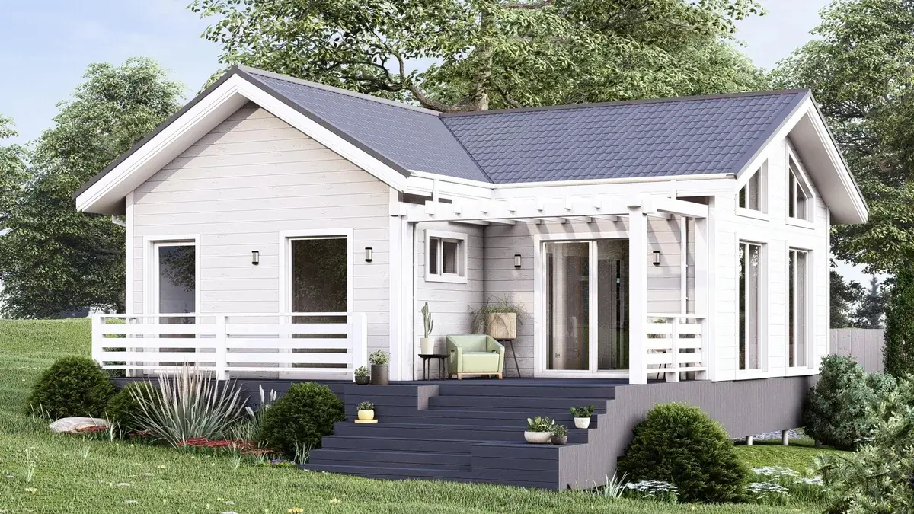
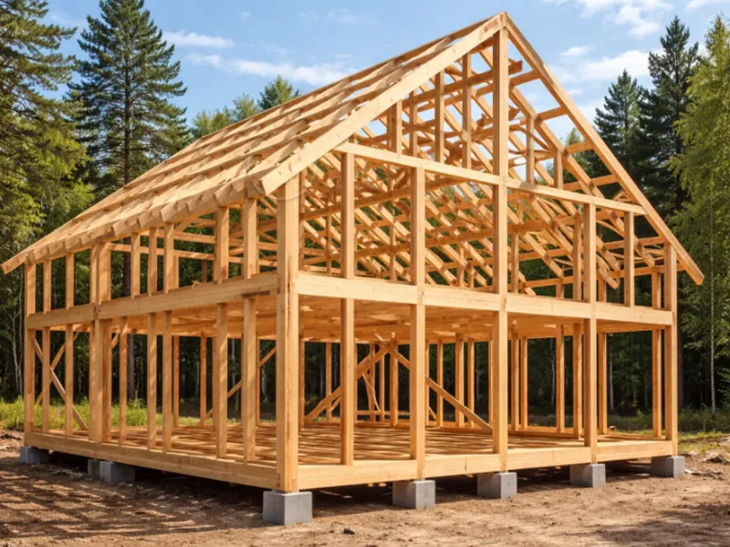
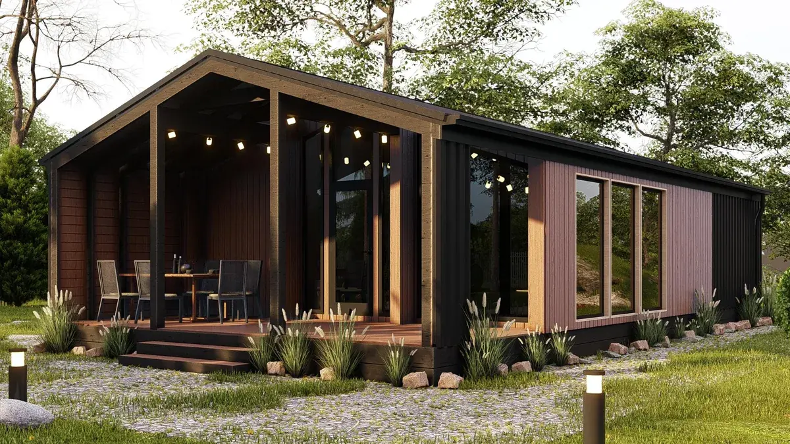
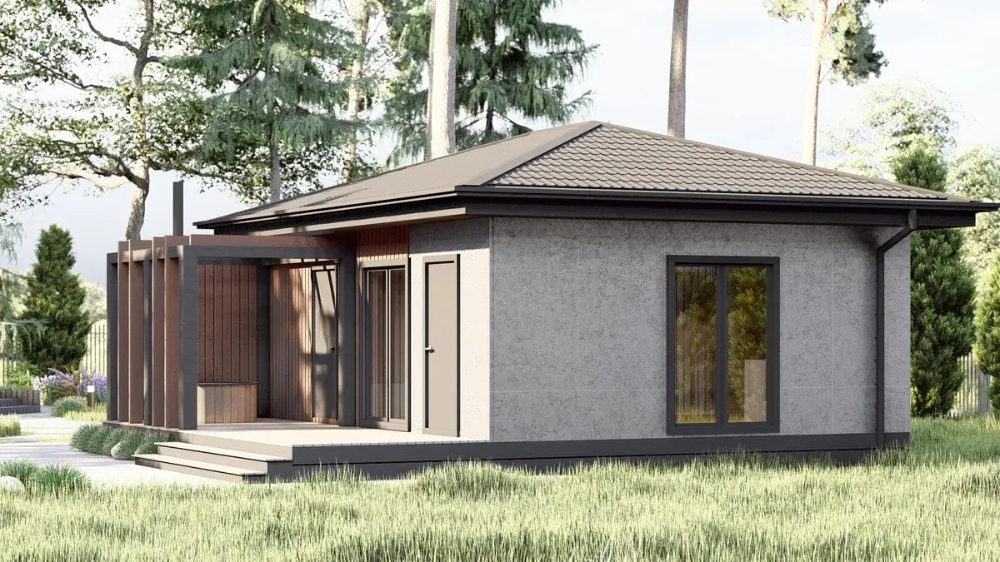
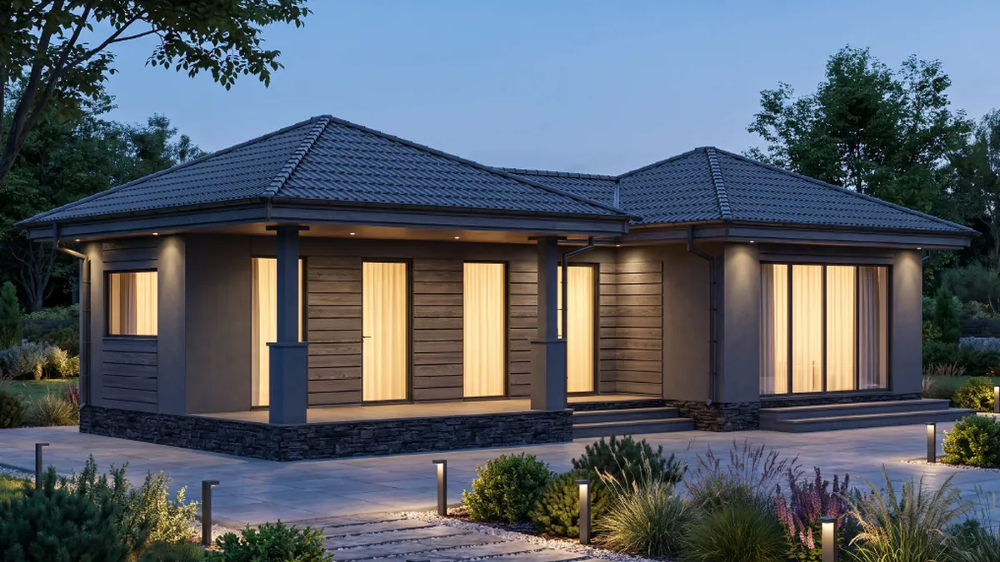

Дом «Ранчо» 10×9,8
- 88,2 м² застройки
- Полная рабочая документация
Строительство под ключ8 920 000 ₽
Смотреть проектДеревянный каркас из сухой доски с утеплителем в пролётах. Самая быстрая и доступная технология: большинство наших бань и беседок построены именно так.

Несущий скелет дома — деревянный каркас из сухой строганой доски. Пролёты между стойками заполняются утеплителем, стена закрывается «пирогом» из пароизоляции и ветро-влагозащиты и обшивается листовым материалом. Дом лёгкий — хватает винтовых свай, а вся электрика и сантехника прячутся внутри стен. Отдельный бонус: каркас собирают зимой так же, как летом — влажность дереву не страшна, оно уже сухое.
Преимущества
Коробка с кровлей — за 2–3 недели, «под ключ» — за 30–45 дней. Пока соседи ждут кладку, вы уже паритесь в своей бане.
Ниже цена метра, чем у камня и бруса, плюс экономия на фундаменте: лёгкому каркасу хватает винтовых свай.
Нет мокрых процессов и усадки: строим зимой без зимних добавок, прогревов и ожидания теплого сезона.
Стена 200 мм с утеплителем 150–200 мм по теплоте проходит кладку в два кирпича — и прогревается за полчаса.
Провода и трубы идут в каркасе — без штробления, коробов и грязи. Отделку делаем сразу после сборки.
Демонтаж и замена любого участка стены или коммуникации — локально, без вскрытия полов дома.
Сравнение технологий
Ориентировочные значения для загородного дома.
| Параметр | Каркас | Клееный брус | Газоблок |
|---|---|---|---|
| Срок «под ключ» | от 30–45 дней | от 60–90 дней | от 3–4 месяцев |
| Фундамент | винтовые сваи | сваи или лента | лента или плита |
| Цена коробки | ниже | выше | средняя |
| Усадка | нет | до 1% | нет |
| Строительный сезон | круглый год | круглый год | теплый сезон или добавки |
| Фактура дерева в интерьере | с обшивкой | да, без отделки | нет |
| Тяжёлые конструкции (печь, камин) | с усилением каркаса | с усилением | без ограничений |
Каркас — оптимум скорости и бюджета, газоблок — «неубиваемый» камень за разумные деньги, клееный брус — премиальная фактура дерева. Большинство бань и беседок мы строим каркасом, дома — по запросу и бюджету заказчика.
Как мы строим
Этап 1
В проекте — сечение каждой доски, состав пирога, узлы и точки усиления. Каркас без проекта — лотерея, мы так не строим.
Этап 2
Винтовые сваи за 1–2 дня в любой сезон. Лёгкий каркас не требует монолита — это половина экономии технологии.
Этап 3
Нижняя обвязка, стойки, верхний пояс — из сухой строганой доски с маркировкой по проекту. Геометрия — по лазеру.
Этап 4
Стропильная система, кровельное покрытие, окна и двери — коробка закрыта от осадков в первые 2–3 недели.
Этап 5
Утеплитель без щелей и мостиков, пароизоляция и ветрозащита по пирогу, электрика и сантехника внутри каркаса.
Этап 6
Отделка сразу после сборки — усадки нет. Акт, паспорт дома, гарантия 5 лет. «Под ключ» — от 30–45 дней.
Важно понимать: качество каркаса решают три вещи — камерная сушка доски, утеплитель без щелей и аккуратные плёнки пирога. Экономия на них всплывает через пару лет счётами и сквозняками. Всё это прописываем в проекте и контролируем на каждом этапе с фотоотчётом — по нормам СП 31-105-2002 (свод правил по деревянному каркасному домостроению).
Получить расчетВопросы и ответы
По нашим ценам 2026 года: каркасная баня «Скандинавия» 9×7 (63 м²) — 3 465 000 ₽, баня «Атлант» 14×8,1 (98 м²) — 5 289 000 ₽, дом «Ранчо» 10×9,8 (88 м²) — 8 920 000 ₽, дом «Прованс» 10×7 с террасой — 8 845 000 ₽. В среднем каркасное строительство под ключ обходится в 55–95 тыс. ₽ за м² — точную смету считаем по проекту за 3 дня.
Расчётный срок службы каркасного дома — 50–70 лет и больше: сухая строганая доска камерной сушки не гниёт при правильном пироге стены, а утеплитель из минваты не слёживается 50 лет. Каркасники, построенные по СП 31-105-2002, стоят по 100 лет — подтверждением служат дома 1950-х в Подмосковье.
Да: стена с утеплителем 150–200 мм по теплоте проходит кладку в два кирпича, а прогревается комната за полчаса. Главное — правильный пирог: пароизоляция изнутри, ветрозащита снаружи, утеплитель без щелей. Это всё в наших проектах.
Три экономии: фундамент (сваи вместо монолита), монтаж (нет мокрых процессов, бригада меньше) и материалы (сухая доска и утеплитель дешевле камня и клееной древесины). При этом срок службы каркасника — 50–70 лет при нормальном уходе.
Не просто можно — большинство наших бань каркасные: парная прогревается за 40–60 минут, тепло держится двое суток. Пирог парной делаем с пароизоляцией и термостойкими материалами у печи.
Ударный шум дождя по крыше есть у любого дома — решается составом кровельного пирога. Для межкомнатных стен используем шумопоглощающие прослойки: в наших проектах акустика заложена отдельно.
О компании
С 2014 года компания «Династия Дерева» строит загородные дома и коттеджи, бани под ключ, беседки, мангальные зоны, навесы и гаражи. Фиксированная смета в договоре, оплата по этапам, гарантия 5 лет.
Каркасный дом — самый быстрый и бюджетный способ въехать в свой дом: коробка собирается за 30–45 дней, вес небольшой, поэтому фундамент — винтовые сваи или мелкозаглублённая плита. Утепление 200 мм по теплоэффективности сопоставимо с кирпичной кладкой в метр.
Строим каркасные дома и бани под ключ в Москве и Московской области: каркас из сухой строганой доски камерной сушки, сечение и шаг считаем по нагрузкам; утепление, пароизоляция внутри и гидроветрозащита снаружи. Проект каркасного дома адаптируем под ваш участок и бюджет.
Строим круглый год: зимний каркас ничем не хуже летнего — технологии и материалы те же, а очередь на бригады зимой короче. Если сравниваете каркас с брусом или газоблоком — выше на странице таблица по 12 параметрам: цена, сроки, тепло, эксплуатация.
Каркасная баня — отдельный плюс технологии: проект бани с комнатой отдыха, проект бани с террасой или компактный вариант — парная прогревается за 2–3 часа, а усадки нет вовсе. Проекты с чертежами адаптируем под участок, цену фиксируем до начала работ.
Для отдыха на участке ставим каркасные беседки с барбекю и мангальной зоной — всесезонные, с остеклением или открытые. Проект мангальной зоны на даче подберём из готовых и добавим печь. Навесы для автомобилей и гаражи с навесом собираем по той же каркасной технологии — быстро и с гарантией.
Как проходит стройка:
Предоплата — только за материалы. Оставьте заявку в форме на сайте — инженер перезвонит в течение 42 минут и привезёт смету через 3 дня.
Примеры проектов
Каждый проект построен по технологии, описанной выше: с рабочей документацией, узлами и сметой.

Строительство под ключ8 920 000 ₽
Смотреть проект
Строительство под ключ8 845 000 ₽
Смотреть проект
Строительство под ключ6 762 000 ₽
Смотреть проект
Строительство под ключ3 712 500 ₽
Смотреть проект